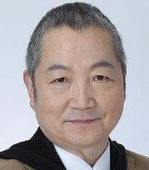

Tetsuo Gotou is a Japanese voice actor. He voiced Derflinger from The Familiar of Zero and Hannayabal from One Piece.
- Gender: Male
- Birthday: August 10, 1950
- Birthplace: Gifu, Japan
- Hobbies: Folk Dance and Japanese Dance

| |
Tetsuo Gotou is a Japanese voice actor. He voiced Derflinger from The Familiar of Zero and Hannayabal from One Piece.
|
 |
|---|
 |
Dr. Z |
|
Dr. Z is a zany, egotistic evil leader of the Alpha Gang. His plan is to use the dinosaur cards to rule the world. He experiments and researchs the cards. |